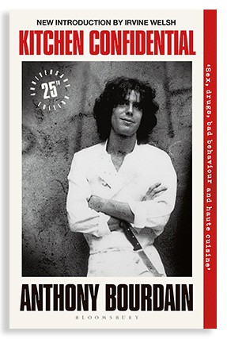
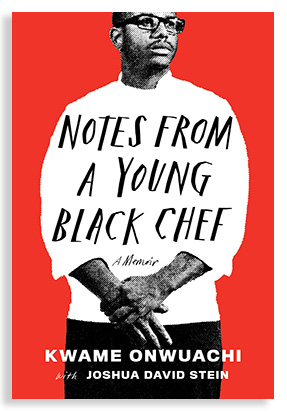
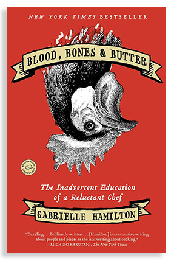
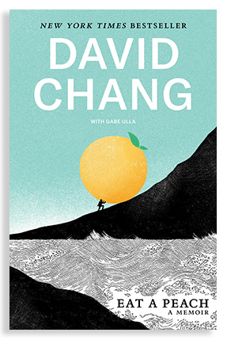
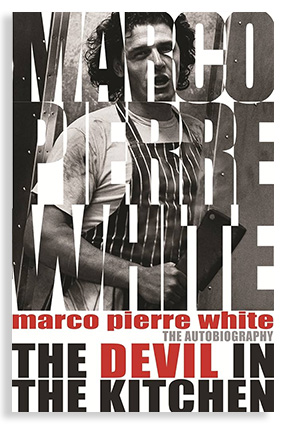
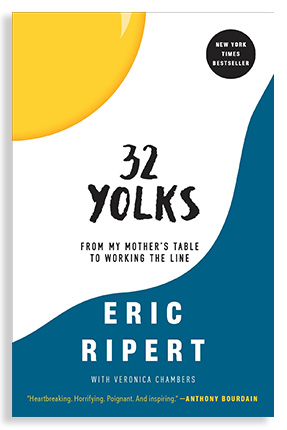

Book List
6 Chef Memoirs for Fans of The Bear
Are you fully invested in the chaotic lives of Carmy and Syd? Have you swapped your water glasses for deli containers? Do you yell “Behind!” even when you’re the only one in the kitchen? If your answer to all of the above is an enthusiastic “Yes, Chef!”, then these chef memoirs deserve a spot on your reading list.

Kitchen Confidential: Adventures in the Culinary Underbelly
by Anthony Bourdain
With his signature acerbic wit and no-holds-barred attitude, Anthony Bourdain take readers on a wild ride through 25 years of sex, drugs, and haute cuisine. Bourdain’s tales from the culinary underbelly are both wildly funny and deliciously shocking; a memoir unlike any you’ve ever read.

Notes from a Young Black Chef
by Kwame Onwuachi with Joshua David Stein
In this debut culinary coming-of-age memoir, Kwame Onwuachi traces his journey from a challenging childhood in the Bronx and time as a gang member to his rise to fame as a celebrated fine dining chef and Top Chef competitor. This inspiring, heart-felt story explores the racial barriers that still exist in the culinary world, the unexpected consequences of fame, and the highs and lows that comes with chasing your dreams.

Blood, Bones, & Butter: The Inadvertent Education of a Reluctant Chef
by Gabrielle Hamilton
Told with with grit, humour, and unwavering honesty, Blood, Bones & Butter chronicles Gabrielle Hamilton’s journey to find purpose and meaning in her life. From the rural kitchens of her childhood to the kitchens of Greece, France, and Turkey Hamilton shares the hardships she faced and the lessons she learned on the path to opening her own acclaimed New York restaurant, Prune.

Eat a Peach: A Memoir
by David Chang
Eat a Peach tells the improbable story of how the youngest son of a deeply religious Korean American Family in Virginia went from teaching English in a small town in Japan to becoming one of the top chefs in America. In this funny and unflinching memoir, David Chang reflects on his feelings of inadequacy and otherness, his struggle with mental illness, and offers an inside and brutal look at life in the restaurant industry.

The Devil in the Kitchen: Sex, Pain, Madness, and the Making of a Great Chef
by Marco Pierre White
The only thing more legendary than Marco Pierre White’s talent in the kitchen was his temper. In The Devil in the Kitchen, the three Michelin star chef tells the story of his life in food from his early apprenticeship days through the wild years of the 80s and into his later years as a successful restaurateur. Full of celebrity cameos and outrageous antics, The Devil in the Kitchen is as entertaining as it is unforgettable.

32 Yolks: From my Mother's Table to Working the Line
by Eric Ripert
In this tender and richly detailed memoir, Eric Ripert takes us from his childhood in the south of France to the legendary Parisian kitchens of culinary icons Jöel Robuchon and Dominque Bouchet, before his arrival in America at the tender age 24. A portrait of one of the world’s greatest chefs as a young man, 32 Yolks is a story shaped by both triumph and profound loss.